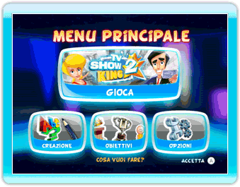

21 |
Nintendo Wi-Fi Connection |
 |
Gioca a TV Show King 2 online e sfida amici, familiari o chiunque altro!
Per giocare un quiz online non devi fare altro che collegarti alla Nintendo  Seleziona "Gioca" dal Menu principale. Seleziona l'icona "Quiz online" dal menu Tipo partita. Nel menu Quiz online potrai visualizzare le Classifiche online o iniziare a giocare. Seleziona "Gioca" per iniziare una partita online. Dopo aver scelto il tuo Mii e la tua postazione, dovrai selezionare il tipo di partita che vuoi giocare. Imposta Modalità di gioco, Difficoltà e Round e poi seleziona "Sfida chiunque". In questo menu potrai anche gestire la tua lista di amici selezionando "Sfida amici". Per maggiori informazioni sulla lista di amici e le relative azioni consulta la sezione Amici online di questo manuale di istruzioni elettronico. Dopo aver selezionato "Sfida chiunque" o invitato i tuoi amici (vedi la sezione Amici online in basso), accederai alla sala d'attesa. Non dovrai fare altro che aspettare che le postazioni vacanti vengano occupate da altri giocatori. Se preferisci, potrai iniziare una partita contro giocatori CPU. Se vuoi modificare le tue impostazioni, premi il pulsante B per tornare alla schermata precedente. Quando almeno due giocatori (incluso te) si sono uniti alla partita, potrai iniziare a giocare senza attendere che tutte le postazioni siano occupate. Le postazioni vacanti verranno occupate da giocatori CPU. In questo caso, la partita avrà inizio solo quando tutti i giocatori collegati avranno selezionato l'icona "Inizia con giocatori CPU". Un simbolo indicherà chi ha selezionato l'icona.
Durante la selezione delle impostazioni di gioco per un quiz online, potrai selezionare "Sfida amici" per inserire un codice amico o gestire la lista di amici. In questa schermata potrai: A) INSERIRE UN NUOVO CODICE AMICO Usa il tastierino numerico sullo schermo per inserire le 12 cifre di un codice amico. Una volta che il tuo amico avrà inserito a sua volta il tuo codice amico sulla sua console Wii, sarete ufficialmente amici. B) VISUALIZZARE IL TUO CODICE AMICO In questa schermata potrai visualizzare il tuo codice amico. Se vuoi diventare amico di qualcuno, dovrai dargli il tuo codice amico. C) INTERAGIRE CON GLI AMICI Nella parte destra dello schermo compare l'elenco di tutti i tuoi amici, detto anche "lista di amici". Lo stato dei tuoi amici (Offline, Online, Non disponibile, In attesa di giocatori, In attesa di amici, Da invitare) è indicato dal colore dell'icona del suo nome. Indipendentemente dallo stato del tuo amico, potrai selezionare l'icona del suo nome per cancellarlo dalla tua lista di amici. Se lo stato del tuo amico è In attesa di giocatori (amici o sconosciuti) potrai partecipare alla sua partita selezionando l'icona del suo nome. In questo caso, non dovrai scegliere le impostazioni della partita, ma accederai alla partita del tuo amico. Se lo stato del tuo amico è Online potrai selezionare l'icona del suo nome per invitarlo a partecipare alla tua partita. Ricorda che prima di selezionare l'icona "Invita" dovrai selezionare tutti gli amici che intendi invitare. A questo punto, accederai alla sala d'attesa. |
 |
 |
 |